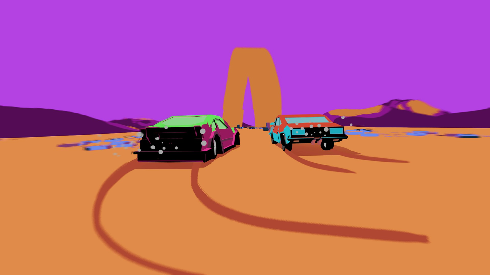
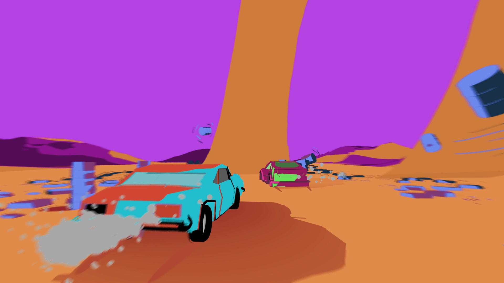
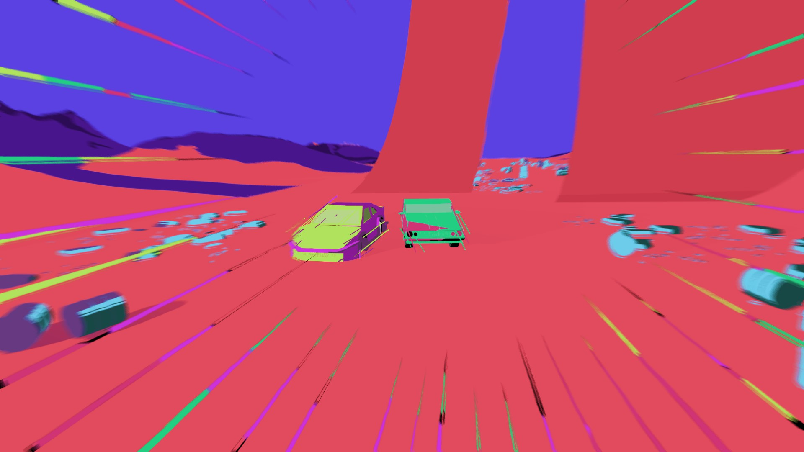
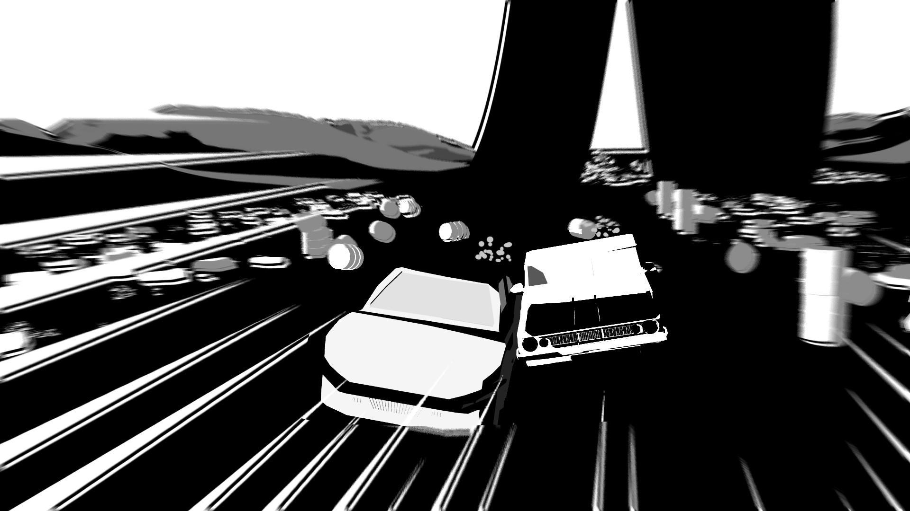
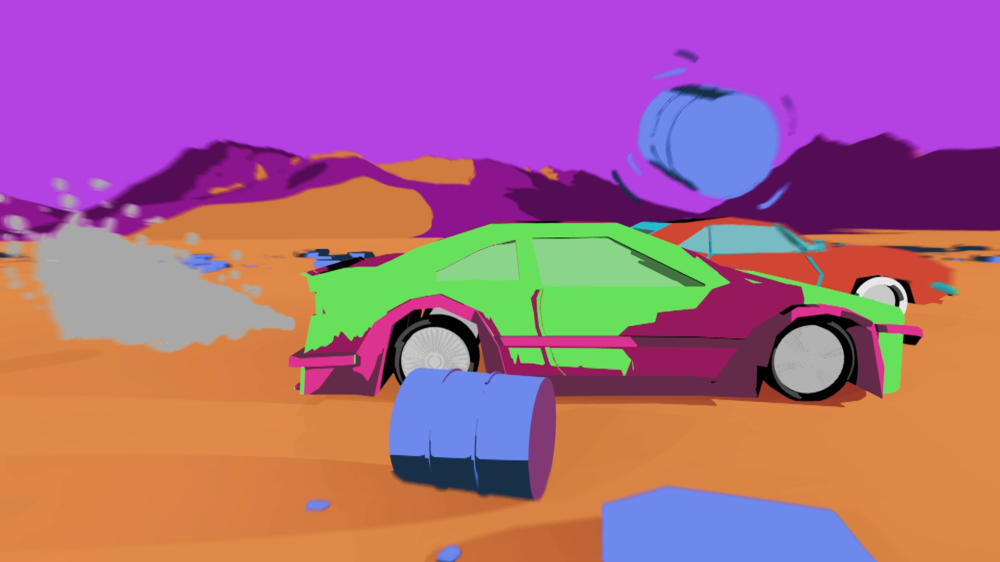
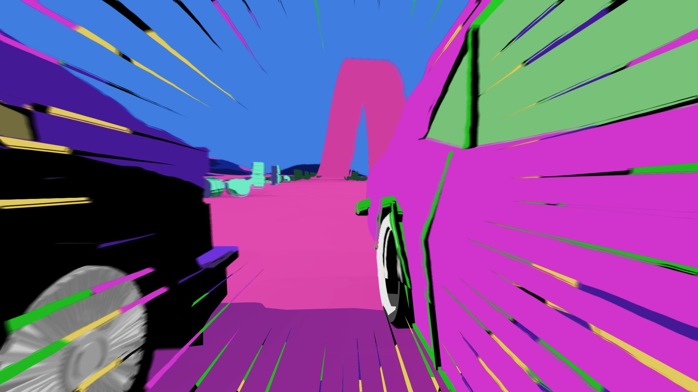

Final Fit
Animação 2D/3D | Som Design
Ativa o som e usa auriculares para uma melhor experiência sonora.
Vê a animação em "fullscreen". Ativa o som e usa auriculares para uma melhor experiência sonora.
     O projeto desenvolvido teve como objetivo a criação de uma animação, explorando várias vertentes da animação 2D e 3D. Todos os elementos presentes foram criados de raiz, tornando assim a vertente visual da animação 100% autoral.
O principal ponto da animação é a velocidade presente na mesma. Este conceito foi representado através de vários elementos 2D adicionados num processo frame a frame, como linhas diagonais e linhas de orientação de objetos. Até mesmo o fumo dos carros contribui para uma sensação de velocidade. Foram adicionados outros efeitos visuais à animação, que têm como objetivo simular sensações visuais presentes no ato da condução. É possível verificar que, nas zonas de desfoque da animação, existe uma distorção do ambiente, remetendo para a sensação de distorção, causada por ondas de calor, sentida durante a condução quando o condutor olha para o horizonte.
A paleta de cores utilizada tem um contraste bastante alto, diferenciando assim os dois personagens presentes na animação. Cada um destes personagens possui uma personalidade distinta. O carro azul e vermelho percorre o percurso de uma forma bastante cuidadosa. Contudo, o carro verde e roxo possui um carácter mais rebelde (também associado às cores escolhidas para o mesmo) e tenta destabilizar o personagem oposto, através de movimentos bruscos e curvilíneos.